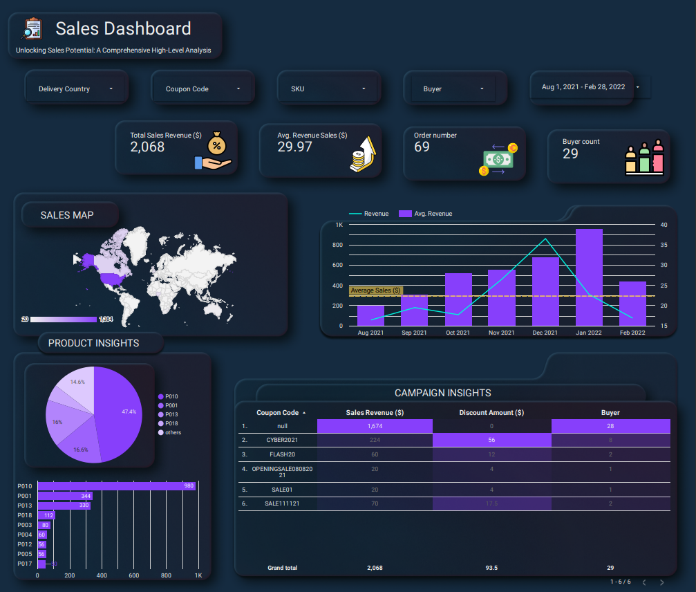

Sales DASHBOARD
Unveiling Insights and Driving Success with Comprehensive Data Analysis and Visualization
SITUATION:
- The goal was to create an insightful sales dashboard using Looker Studio that provides valuable information on financial metrics.
TASK:
- The objective was to design an interactive and visually appealing dashboard featuring the following metrics:
- Slicer for flexible data filtering.
- KPIs:
- Total sales revenue.
- Average revenue per sale.
- Number of orders.
- Buyer count.
- Sales map (US-specific) visualizing:
- Revenue with a line chart.
- Average revenue with a bar chart.
- Product insight using:
- Pie chart displaying SKU distribution.
- Bar chart presenting SKU performance.
- Campaign insights:
- Table with coupon codes, sale revenue, discount amount, and buyers, utilizing heatmap conditional formatting.
ACTION:
- I transformed and processed the sales data using Looker Studio's capabilities, ensuring data completeness and accuracy for reliable analysis.
- Leveraging my technical expertise, I optimized data utilization, incorporated advanced features, and functionalities into the dashboard.
RESULT:
- Through thoughtful collaboration with the project team, we identified the most relevant metrics for the financial dashboard.
- The final product was a highly interactive dashboard within Looker Studio, enabling users to explore sales data, gain valuable insights, and make informed decisions.
- The project received positive feedback and demonstrated my proficiency in creating effective sales dashboards with Looker Studio, showcasing its potential for data visualization and analysis.
Location
Philippines, Iloilo City
Mobile number
Social
- © Untitled
- Design: HTML5 UP